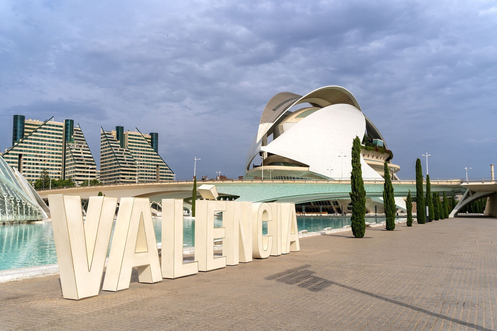

A peu de carrer: qué reclaman al cap i casal
El Ayuntamiento de Valencia recoge, de forma anual, las reclamaciones de sus ciudadanos, ya sea en forma de “quejas” o de “sugerencias”. Más allá del nombre y del canal que usen, los valencianos se han dirigido a sus administradores más de 90000 veces en los últimos cinco años. Se quejan más… donde hay más gente, pero no son esos barrios los más combativos. Suelen hacerlo sobre todo lo que se ve a primera vista: las calles que podrían estar más limpias, los baches o desperfectos, lo que está señalizado, la vegetación del cap i casal, y sobre la actividad de sus funcionarios, ya sean policías o trabajadores municipales. Más allá de que algunos datos puedan resultar anecdóticos, la acumulación de casos permite encontrar las zonas de la ciudad que acumulan algunos problemas convertidos en permanentes.

Valencia tiene censadas más de 800.000 personas que habitan sus 19 distritos y 89 barrios o pedanías, sin contar con quienes también cruzan y, muchas veces, viven en la ciudad: principalmente, otras 700.000 personas procedentes de su área metropolitana. Como toda gran urbe, quienes habitan la ciudad se quejan cada día sobre lo que no funciona. Hasta en 90.000 casos, esas quejas y sugerencias se han puesto por escrito y han sido enviadas al Ayuntamiento valenciano.
Una descripción básica de todas ellas está accesible para el público a través del Portal de Datos Abiertos del Ayuntamiento de Valencia, incluyendo la fecha, la zona de la ciudad sobre la que expone la queja, y el tipo de queja, a partir de una lista definida de categorías y subcategorías temáticas que delimita el Ayuntamiento.
Los cuatro “jinetes” de Valencia: seguridad, parques, limpieza y asfalto
Si Vicente Blasco Ibáñez hubiera hecho una adaptación menos dramática de su famosa novela Los cuatro jinetes del apocalipsis sobre las quejas del cap i casal entre 2020 y 2026, sus cuatro “jinetes” serían, sin duda, la seguridad en sus calles, las deficiencias en parques y jardines, la limpieza en las calles y el deterioro de su asfalto. En conjunto, estas categorías reúnen la mitad de todos los registros.
Estas reclamaciones se repiten prácticamente cada año, y están asociadas por el mismo Ayuntamiento junto a otras quejas que tiene relación. Si hacemos caso a esas asociaciones: casi la mitad de todas ellas hacen referencia a problemas visibles en sus calles, plazas y avenidas, aunque su incidencia ha ido variando de año en año.
A la cabeza, la limpieza de la ciudad es la primera reclamación recurrente de la ciudadanía. El consistorio valenciano ha recibido casi siete quejas al día desde 2020, sin que estas cifras amainen en ningún caso. El segundo gran grupo de reclamaciones se refiere a los “servicios prestados en la via pública”, lo que se traduce en más de 2000 demandas anuales debidas a problemas de seguridad en sus calles. El tercer jinete son los requerimientos debido a deficiencias detectadas en calles y plazas de la ciudad, contando baches, farolas en deficiente estado, problemas con alcantarillas y mobiliario urbano. Este número creció especialmente en 2022, pero las cifras, aunque hayan descendido ligeramente desde entonces, siguen manteniéndose altas en los más de 130 km2 de la ciudad
Otros problemas detectados tienen que ver, en primer lugar, con las zonas verdes de la ciudad, que fueron especialmente detectados en 2022. Estos valores han descendido desde entonces, coincidiendo tal vez con el hecho de Valencia fue declarada Capital Verde Europea en 2024, si bien todavía persisten más de 1000 quejas anuales sobre el tema.
Más allá de que los valencianos parezcan quejarse sobre todo de lo que se observa a primera vista, otros dos conceptos han crecido en los últimos años. En primer lugar, las quejas sobre las actuaciones del propio Ayuntamiento y de sus trabajadores, mayores desde 2024. Y además, los valencianos han aumentado el número de sus demandas e ideas para mejorar la ciudad, ya sea de forma genérica o, específicamente, sobre su tráfico rodado, ya sea la circulación o la demanda de aparcamientos.
Una Valencia, muchas Valencias
Como toda gran ciudad, los problemas no son los mismos en cada uno de los distritos y barrios, y tampoco lo son sus demandas, que también han ido cambiando en el tiempo. No obstante, sí hay algunos elementos comunes que deben tenerse en cuenta.
El primero es que el número de quejas de cada barrios está relacionado… directamente con la cantidad de población. En otras palabras, cuantas más población, más quejas se producen también en ese barrio. La clasificación está claramente encabezada por Benicalap, que es también uno de los barrios con mayores valores extremos: el más poblado, tanto en número de personas como de viviendas, con una relativamente alta densidad de población, una renta media-baja… y la mayor tasa de vehiculos por habitante (más de 2,5 coches por persona).
No obstante, en varios de los barrios más poblados, como Russafa, Malilla, Arrancapins o Patraix, el número de quejas es ligeramente mayor al esperado.
Pero si atendemos a la tasa de reclamaciones, quejas y sugerencias por cada 1000 habitantes, otros barrios aparecen como los más combativos de la ciudad. En contexto, los valencianos apenas han reclamado unas 94 veces por cada 10000 habitantes, acumulando todas las menciones en los últimos seis años.
Si fijamos la vista en los barrios con mayores reclamaciones, aparecen zonas muy concretas. Destacan especialmente buena parte de los barrios céntricos de la ciudad, incluidos todos los del distrito de Ciudad Vella, con Sant Francesc a la cabeza, además de otros barrios o pedanías como El Perellonet, Beniferri, La Malva-Rosa, La Roqueta, La Creu del Grau, El Botànic y El Saler. Estos barrios coinciden en haberse dirigido a la administración municipal entre 140 y 270 veces por cada 1000 habitantes, es decir, hasta el triple de la media.
Al otro lado están los barrios cuyos habitantes apenas han reclamado a su ayuntamiento. Un puñado de barrios o pedanías, como Sant Antoni, Orriols, l’Hort de Senabre, les Cases de Bàrcena, Castellar-l'Oliveral, Torrefiel y Sant Llorenç no han llegado a 50 quejas por cada 1000 habitantes en seis años: o unas 4.000 quejas para más de 90000 ciudadanos. La duda radica en saber si es que están más satisfechos, o bien, confían menos en su gobierno local.
Mucha, mucha policía
Y en lo que se refiere al tema de reclamación más habitual, buena parte de estos barrios, en estos años, coinciden en un tema básico: la petición de mayor presencia de la Policía Local.
Esta percepción sobre la necesidad de mayor presencia policial acumula más de 8.000 peticiones, un 9% del total de todas las recibidas en el gobierno local de la ciudad en los últimos cinco años.
Si atendemos a los datos de los barrios con mayor número de peticiones en términos absolutos, destacan en la lista Russafa (309), Ciutat Jardí (288), Malilla (288), Benicalap (277) y Tres Forques (268). Benicalap, que encabeza la lista Benicalap, también figura en diversos rankings no oficiales entre los barrios considerados más peligrosos de la ciudad.
No obstante, si comparamos la población de cada uno de esos barrios, Russafa, con casi la mitad de vecinos que Benicalap, tiene más quejas y, de hecho, su tasa de quejas por cada 1000 habitantes es mucho mayor. Lo mismo ocurre con Ciutat Jardí y, mucho peor, con Tres Forques.
Más aún, los datos por distrito terminan de matizar la lectura: las zonas donde más se reclama presencia policial no son necesariamente las que menos actuaciones reciben. Al contrario, en 2024 la relación entre ambas variables fue medio-alta, lo que indica que los distritos con más quejas suelen ser también aquellos donde la Policía Local acumula un mayor volumen de intervenciones. Sin embargo, existen excepciones. Campanar es la más evidente, ya que fue el distrito con más quejas y sugerencias demandando una mayor presencia policial (134), pero no figura entre los que concentraron más actuaciones de la Policía Local, con 18.578 intervenciones en 2024.
Los datos no permiten hablar de zonas claramente desatendidas por la Policía Local. Más bien apuntan a que las quejas por falta de presencia policial se concentran, en general, en distritos donde también se registra un mayor volumen de actuaciones. No obstante, la excepción de Campanar obliga a matizar la lectura: allí las quejas son especialmente elevadas pese a no registrar uno de los mayores volúmenes de actuaciones, por lo que debería analizarse con mayor detalle si el distrito requiere de un refuerzo policial.
Nota: r = 0,77%
La indigencia, un problema que no para de crecer
Las quejas relacionadas con indigentes son las únicas que han aumentado de forma ininterrumpida durante todos los años desde 2020. En concreto, se ha pasado de 82 quejas y sugerencias a 400 en 2025, lo que supone un crecimiento del 388%.
La distribución territorial, sin embargo, muestra una paradoja. En El Grau, donde se encuentra el antiguo circuito urbano de Fórmula 1, actualmente en desuso, se concentran decenas de asentamientos y chabolas. No obstante, al estar situado en un área apartada de las principales zonas residenciales y de tránsito del barrio, El Grau apenas acumula una decena de quejas durante los años analizados. En cambio, el malestar ciudadano se concentra en áreas centrales, especialmente en Extramurs (193 quejas), Ciutat Vella (172) y Quatre Carreres (108). Más en detalle, el mapa señala como principales focos tres barrios colindantes: La Petxina y Arrancapins (Extramurs) y Russafa (L’Eixample).
En el entorno próximo a estos barrios se ubican tres puntos clave de atención a personas sin hogar: el Centro de Atención Social a personas sin techo (CAST), la Casa Caridad y el Centro de Atención de Emergencias Sociales (CAES). Aunque estos recursos no se encuentran dentro de los barrios más afectados, su cercanía podría influir en los desplazamientos y la presencia de usuarios en la zona, sin que ello permita establecer por sí solo una relación causal con el volumen de quejas registrado.
En 2024 se repite un patrón similar al observado en las peticiones de mayor presencia policial. Algunos de los distritos con más quejas sobre indigentes son también algunos de los que registraron más actuaciones humanitarias o de riesgo por parte de la Policía Local, categoría que incluye las intervenciones vinculadas con los indigentes. No obstante, de nuevo existen excepciones. Es el caso de Extramurs, donde el número de quejas es muy superior al de actuaciones registradas. Sumado a que es el distrito con más quejas de este tipo, este desequilibrio apunta a que en Extramurs existe un foco de preocupación específico que debería estudiarse con mayor detalle, tanto para valorar si la atención social y policial resulta suficiente como para identificar qué factores están alimentando la concentración de reclamaciones vecinales.
Nota: r = 0,71
Limpiar… donde más se necesita, o más se queja
Toda ciudad grande que se precie suele tener a ciudadanos preocupados por la limpieza de sus calles, y Valencia no iba a ser menos. Casi 1 de cada siete quejas, sugerencias o recomendaciones, es decir, más de 13000 reclamaciones, tienen que ver con este tema.
A la cabeza están, literalmente, las casi 5000 peticiones por deficiente limpieza en la vía publica, las más de 1200 sugerencias también por este tema, o las 1100 demandas sobre edificios y solares sucios apuntados con el dedo de los valencianos. Los contenedores, ya sea por su deficiente estado o porque hay algún problema con cambios en su ubicación, también acumulan otras 3000 demandas. La recogida de residuos para su reciclaje, de vehículos abandonados, de excrementos de animales domésticos o de objetos dejados en la vía pública completan las peticiones ciudadanas en este campo.
Cabría pensar en que las quejas por la suciedad de las calles tenga alguna relación con la extensión o con la población que allí viven. Un análisis de los datos arroja resultados curiosos: la cuarta parte de los barrios con más quejas sobre limpieza acumulan algo más de la mitad de todas las reclamaciones (un 53%) y, también, un 51% de toda la población, pero apenas ocupan la quinta parte de toda la superficie de la ciudad.
Si reparamos en el número de quejas por kilómetro cuadrado, salta otra sorpresa, o tal vez no. La mayoría de los barrios con más quejas proporcionales pertenecen a los distritos más céntricos, con el barrio de El Mercat a la cabeza. Sin embargo, hay también hay barrios comparativamente mucho más pequeños, como El Pilar, Albors, L’Amistat o El Calvari, que están también a la cabeza de las quejas, tanto en número absolutos… como en porcentaje.
Datos parecidos se refieren a otras quejas más específicas sobre limpieza urbana, ya sean relativas a contenedores de basura, tanto por su ubicación como por el estado de los mismos, o a elementos relacionados con una posible dejadez ciudadana, incluyendo el abandono de objetos o vehículos en la vía pública.
Lo que se percibe a primera vista
Si la limpieza de la ciudad es uno de los primeros elementos que ciudadanos y viajeros pueden observar a primera vista, hay otro elemento fundamental para dar una buena primera impresión: el estado de sus calles. Como cabía esperar, unas 17.000 reclamaciones, cada una de cada cinco reclamaciones ciudadanas, hacen referencia a lo que sienten conductores y peatones a lo largo de toda la ciudad.
La población de la ciudad insiste en todo momento sobre la necesidad de reparaciones en la vía pública. Este apartado acumula 10000 reclamaciones de las 90000 analizadas. Cómo, quiénes, y dónde insisten merece una mirada aparte.
Para empezar, los barrios con mayor número de reclamaciones no coinciden en la mayoría de los casos con los más extensos, excepto en unos casos concretos: Sant Pau, Malilla, Benicalap, Benimàmet y El Cabanyal-El Canyamelar. Todos estos barris coinciden también en otros puntos: son algunos de los barrios más poblados (sobre todo, Benicalap y Sant Pau), tienen rentas medias-bajas (por debajo de la media de la ciudad) y también están a la cabeza de las quejas sobre otros problemas en las calles valencianas: baches, alumbrado público o problema de señalización en sus calles.
Precisamente, la señalización es el segundo gran problema de las calles del cap i casal, si nos centramos en el volumen de las más de 6000 reclamaciones. En este caso, las quejas pueden asociarse con distintos factores: en algunos casos, una mayor densidad de población, que quizá ayude a percibir con más frecuencia los posibles problemas, como ocurre en Albors, Patraix, La Petxina, La Raiosa o el Pilar. Pero también hay datos altos en varios barrios de Ciutat Vella, Extramurs o Jesús, que no están ni muy poblados ni son muy densos.
Los baches y el alumbrado son otros caballos de batalla. Los primeros presentan una sorpresa: cabría esperar que los barrios con más vehículos fueran los más propensos a tener más quejas de sus conductores, pero no siempre es asi. Con los datos sobre el parque de vehiculos por barrio en 2025, obtenidos a partir de la información estadística del Ayuntamiento de Valencia, es cierto que buena parte de los barrios coinciden en ambos aspectos (más coches, más quejas por baches), con algunas excepciones: Benicalap, El Cabanyal, Sant Francesc y Sant Marcel·lí. Los dos últimos son barrios de tamaño medio, pero tienen muchas más quejas que otros mayores.
Otras más de 2000 quejas se acumulan sobre el alumbrado de la ciudad. En este caso, los datos barrio por barrio no no presentan valores excesivos, con un máximo de unas 80 quejas en cinco años, en Patraix, y una mediana de 21 quejas por barrio en el conjunto de la ciudad.
Cuando el verde también genera quejas
Valencia presume de ser una ciudad cada vez más verde. Pero los datos muestran que el estado de parques, jardines y arbolado urbano también es una de las cuestiones que más preocupan a sus vecinos. Entre 2020 y 2026, los servicios de jardinería acumularon 8.026 quejas y sugerencias, lo que representa otro 9% de todos los registros ciudadanos presentados ante el Ayuntamiento.
La mayor parte de estas reclamaciones se concentra en dos cuestiones muy concretas: las deficiencias en parques y jardines, que suman 5.393 registros, y la poda de árboles, con 2.633. Juntas explican prácticamente la totalidad de las incidencias relacionadas con el mantenimiento de las zonas verdes de la ciudad.
La evolución de los datos refleja una relación cambiante entre la ciudadanía y los espacios verdes urbanos. Las reclamaciones crecieron de forma sostenida hasta alcanzar un máximo de 1.742 registros en 2022, casi el doble que en 2020. Desde entonces la tendencia se ha invertido y las incidencias han descendido durante tres años consecutivos, aunque en 2025 todavía se registraron 1.110 comunicaciones, un 15 % más que al inicio de la serie.
Esta reducción coincide con una etapa de fuerte apuesta institucional por la infraestructura verde de la ciudad. En 2023 el Ayuntamiento aprobó el Plan Verde y de la Biodiversidad Urbana de Valencia, una hoja de ruta que fija la estrategia municipal en materia ambiental hasta 2050. Un año después, Valencia fue reconocida como Ciudad Arbórea del Mundo por la FAO y la Fundación Arbor Day y ostentó además el título de Capital Verde Europea 2024. Solo ese año se plantaron más de 2.000 nuevos árboles, especialmente en barrios con menor cobertura vegetal.
Al buen tiempo, mala cara
Las reclamaciones sobre jardinería también tienen una marcada dimensión estacional. Los registros aumentan con la llegada del buen tiempo y se concentran especialmente entre los meses de mayo y octubre, precisamente cuando parques y jardines adquieren mayor protagonismo en la vida cotidiana de la ciudad.
Los datos parecen confirmar una lógica sencilla: los ciudadanos se quejan más de aquello que utilizan y observan con mayor frecuencia. Cuando las zonas verdes se llenan de actividad, también aumenta la atención sobre su mantenimiento, la poda, el estado de las instalaciones o la conservación del arbolado.
La distribución territorial de estas incidencias tampoco es homogénea. Los barrios y distritos con mayor volumen de zonas verdes, mayor densidad de arbolado o importantes procesos recientes de renovación urbana concentran buena parte de las reclamaciones relacionadas con jardinería.
Paradójicamente, las quejas no siempre son un indicador de abandono. En muchas ocasiones reflejan precisamente lo contrario: una ciudadanía que utiliza intensamente los espacios públicos y que presta una atención creciente a la calidad ambiental de su entorno. Cuanto más verde es la ciudad, mayores parecen ser también las expectativas de quienes la habitan.
Más allá del “usted no sabe con quién está hablando”
No todos los problemas que preocupan a los valencianos están en la calle. Una parte importante de las reclamaciones tiene su origen dentro de la propia administración. Entre las incidencias relacionadas con la tramitación administrativa y la atención personal municipal se registraron 7.515 comunicaciones entre 2020 y 2026, el equivalente a una de cada doce quejas y sugerencias presentadas por la ciudadanía.
La principal fuente de frustración son los tiempos de espera. La tardanza en la resolución de expedientes acumula por sí sola 2.650 reclamaciones, convirtiéndose en el mayor foco de conflicto dentro de la relación entre vecinos y Ayuntamiento. Le siguen las quejas por la tardanza en la actuación municipal, con 1.378 registros.
Tras varios años de altibajos, las reclamaciones por expedientes alcanzaron su máximo histórico en 2025, con 614 casos, una cifra que apunta a una creciente percepción de lentitud en la respuesta administrativa. Ese mismo año también se registró el mayor volumen conjunto de incidencias relacionadas con la administración municipal.
La atención directa al ciudadano tampoco escapa a las críticas. Las reclamaciones vinculadas al Padrón, la atención en Servicios Sociales, la información municipal o la actuación de la Policía Local muestran una tendencia creciente durante buena parte del periodo analizado. Especialmente llamativo es el caso del Padrón, que pasó de 27 quejas en 2020 a registrar picos superiores a las 300 incidencias en los años posteriores.
Estas quejas han ido aumentado con el tiempo. Si hay un año que sobresale en la serie es 2025. Entre tramitación administrativa y atención personal municipal se contabilizaron 1.421 reclamaciones, la cifra más alta de todo el periodo estudiado.
Además, los problemas se concentraron en muy pocos ámbitos. Solo cuatro subtemas —la resolución de expedientes, el Padrón, la atención en Servicios Sociales y las discrepancias con la actuación de la Policía Local— reunieron el 72 % de todas las reclamaciones registradas en estas categorías.
Esta concentración permite identificar con claridad los principales puntos de fricción entre la ciudadanía y la administración. Más allá de los grandes debates urbanos, buena parte de la satisfacción ciudadana depende de cuestiones mucho más cotidianas: obtener una cita, resolver un expediente en plazo, recibir atención adecuada o conseguir respuesta a una solicitud.
Porque si los parques y los baches reflejan el estado visible de la ciudad, la gestión de los trámites revela el funcionamiento de su maquinaria interna. Y los datos muestran que, para muchos valencianos, esa maquinaria sigue siendo uno de los principales motivos de reclamación.
Reclame… si tiene conexión
La forma en que los valencianos trasladan sus quejas, sugerencias e incidencias al Ayuntamiento ha cambiado profundamente en los últimos años. Si durante décadas la atención presencial y telefónica fueron las vías habituales para contactar con la administración, los datos muestran que hoy la participación ciudadana se produce, casi por completo, a través de internet.
La web municipal se ha consolidado como la gran puerta de entrada de las reclamaciones. Entre 2020 y 2026, este canal concentra entre el 70 % y el 85 % de los registros totales. Pero la transformación más interesante no está en el liderazgo Rede la web, sino en el avance constante de la sede electrónica. Mientras que en 2020 este canal apenas superaba los 100 de registros mensuales, cinco años después alcanza cifras récord y supera con frecuencia las 300 comunicaciones al mes. El máximo se registró en septiembre de 2025, con 413 expedientes, una cifra que refleja el creciente protagonismo de los trámites digitales y una ciudadanía cada vez más acostumbrada a relacionarse con la administración sin necesidad de desplazarse.
En sentido contrario evolucionan los canales tradicionales. El registro presencial sufrió un brusco descenso durante la pandemia y nunca recuperó el peso que tuvo antes de 2020. La atención telefónica, por su parte, se ha convertido en una vía residual y prácticamente desaparece de la serie a partir de 2025. La fotografía general es la de una administración cada vez más digital y unos ciudadanos que priorizan la inmediatez y comodidad de los servicios electrónicos.
La evolución temporal también revela una estacionalidad clara. Las reclamaciones tienden a aumentar durante la primavera y alcanzan sus niveles más altos tras el verano, especialmente en septiembre, cuando la actividad municipal y ciudadana recupera el ritmo habitual. No es casualidad que los dos mayores picos de toda la serie se registren precisamente en ese mes: septiembre de 2021, con 1.916 comunicaciones, y septiembre de 2025, con 1.714.
Cuando el canal condiciona la queja
Mientras la web municipal concentra casi exclusivamente sugerencias, las quejas formales se canalizan mayoritariamente a través de la sede electrónica y, en menor medida, mediante el registro de entrada. La divergencia es tan marcada que invita a preguntarse si la ciudadanía elige libremente el canal o si es el propio diseño de los procedimientos el que orienta cada tipo de comunicación.
Una posible explicación se encuentra en la arquitectura de los servicios digitales del Ayuntamiento. En la web municipal, el acceso a las sugerencias es directo y sencillo: basta con completar un formulario accesible desde la propia página. Sin embargo, el recorrido para presentar una queja es mucho más complejo. El usuario debe navegar por información administrativa adicional y, cuando decide iniciar el trámite, es redirigido a la sede electrónica. En la práctica, el canal web parece funcionar como una puerta de entrada para propuestas y observaciones, mientras que las reclamaciones formales son derivadas hacia procedimientos administrativos específicos.
Esta diferencia ayuda a entender por qué la sede electrónica concentra la mayor parte de las quejas relacionadas con expedientes, actuaciones municipales o atención administrativa. Más que una preferencia ciudadana, los datos sugieren que existe una separación funcional entre canales: uno pensado para comunicar incidencias y sugerencias de forma rápida y otro diseñado para gestionar reclamaciones que requieren identificación, seguimiento o documentación adicional.
La situación es aún más compleja en el ámbito de las incidencias urbanas. El Ayuntamiento dispone de un procedimiento específico para comunicar problemas en la vía pública, como desperfectos, cuestiones de limpieza o incidencias en los servicios urbanos. Sin embargo, estos mismos asuntos aparecen también entre las categorías del formulario de sugerencias. El resultado es una posible superposición de canales que podría explicar por qué determinados problemas terminan registrándose por vías distintas a pesar de referirse a cuestiones similares.
La atención telefónica presenta un comportamiento diferente. En este canal predominan las sugerencias frente a las quejas, un patrón que podría estar relacionado con la propia naturaleza de la interacción personal. La conversación con un operador facilita consultas, propuestas o comentarios informales, mientras que las reclamaciones más complejas suelen acabar derivándose hacia procedimientos administrativos formales. Aunque los datos no permiten confirmar esta hipótesis, sí apuntan a que el grado de formalización del canal influye en el tipo de participación que genera.
En conjunto, los registros muestran que las diferencias entre sugerencias y quejas no dependen únicamente de las preocupaciones de la ciudadanía. También están condicionadas por el diseño de los canales disponibles y por las barreras —o facilidades— que cada uno de ellos presenta. La participación ciudadana no solo se expresa de formas distintas según el problema; también cambia en función del camino que el Ayuntamiento ofrece para hacerla llegar.
La diferencia es especialmente visible en la tramitación administrativa, donde la sede electrónica acumula casi cinco veces más registros que la web. Este comportamiento sugiere que los ciudadanos perciben este canal como la vía más adecuada para reclamar retrasos en expedientes, actuaciones municipales o problemas vinculados a procedimientos burocráticos.
Resulta interesante ver dónde los canales más tradicionales repuntan sus cifras. El registro presencial mantiene cierto peso en cuestiones relacionadas con la atención municipal o las discrepancias con decisiones administrativas, mientras que la atención telefónica alcanza sus valores más altos, como la atención personal municipal o los servicios prestados en la vía pública, representa una proporción muy reducida del total de registros.